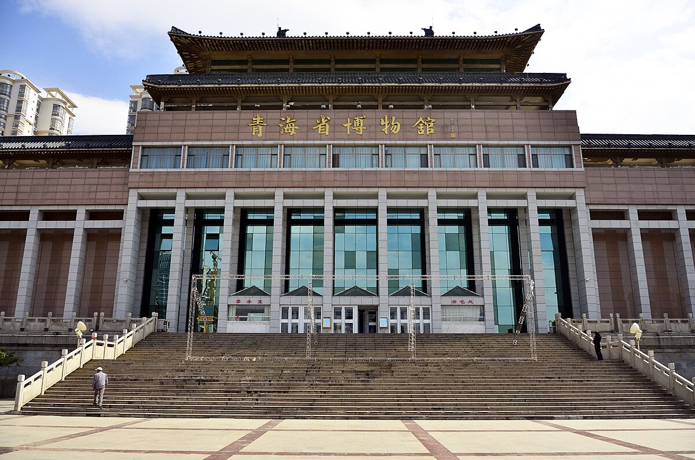

Top 3 Historic Sites in Xining
Dongguan Mosque

Introduction
Dongguan Mosque, in downtown Xining, is one of China’s largest and most famous Islamic mosques—founded in the Ming Dynasty (1380) and rebuilt in the 20th century. Covering 13,600 square meters, it blends traditional Chinese architecture (curved roofs, red pillars) with Islamic design (geometric patterns, domes). The main hall can hold 10,000 worshippers, with intricate wood carvings and colorful stained glass windows. The mosque’s courtyard is lined with ancient trees, and its minaret stands 30 meters tall—offering views of downtown Xining. Non-Muslim visitors are welcome to tour the mosque (except during prayer times, e.g., Friday noon) and learn about Hui ethnic culture. It’s a unique historic site that shows Xining’s long history of religious harmony.
Best Time to Visit
Morning (10:00 AM–12:00 PM): Quiet; avoid prayer times (check the mosque’s schedule in advance).
Spring (April–May): Courtyard trees bloom; mild temperatures.
Price
Entry Fee: Free (dress modestly—women can borrow headscarves at the entrance).
Cultural Guide: 30 CNY/group (explains Islamic traditions and the mosque’s history).
Hui Culture Exhibition: Included in the visit (small hall with photos of Hui life).
Qinghai Provincial Museum

Introduction
The Qinghai Provincial Museum, in downtown Xining, is the best place to learn about Qinghai’s 5,000-year history—home to over 40,000 cultural relics from the Qiang, Tubo, and Han civilizations. The star exhibit is the “Qijia Culture Pottery” (4,000-year-old clay vessels with intricate patterns, showing early plateau life) and the “Tubo Dynasty Gold Relics” (gold jewelry and tools from Tibet’s ancient Tubo Kingdom). Other highlights include the Plateau Ecology Exhibition (explaining Qinghai’s unique flora and fauna, like Tibetan antelopes) and the Hui Ethnic Culture Hall (displaying traditional Hui clothing, food, and handicrafts). The museum has modern, interactive displays and English labels, making it easy for international visitors to understand. It’s a must-visit for anyone who wants to dive into Xining’s rich historical roots.
Best Time to Visit
Afternoon (2:00 PM–4:00 PM): Quiet; avoid school groups that visit in the morning.
Weekdays: Less crowded than weekends.
Price
Entry Fee: Free (requires online reservation 1 day in advance; ID is needed).
Audio Guide: 20 CNY/rental (available in English, Chinese, and Tibetan).
Special Exhibitions: 20–40 CNY/adult (varies by theme, e.g., ancient silk).
Qinghai Lake Bird Island Historic Sanctuary

Introduction
Qinghai Lake Bird Island, a small island in Qinghai Lake, is not just a nature spot—it’s a historic sanctuary with a 60-year history of protecting migratory birds. Since the 1960s, it has been a key stopover for birds traveling between Siberia, Southeast Asia, and Australia. The island’s historic significance lies in its role as one of China’s first bird protection areas—helping to save endangered species like the bar-headed goose. Visitors can walk along wooden boardwalks (to avoid disturbing birds) and watch thousands of birds nest, feed, and fly over the lake. The island also has a small museum explaining its conservation history and the birds’ migration routes. It’s a unique historic site that combines nature protection with cultural heritage.
Best Time to Visit
Summer (May–July): Birds nest and raise chicks; peak bird-watching season.
Early Morning (7:00 AM–9:00 AM): Birds are most active; cooler temperatures.
Price
Entry Fee: Included in Qinghai Lake’s main entry fee (50 CNY extra for Bird Island in peak season).
Bird-Watching Binoculars Rental: 20 CNY/hour (available at the island’s entrance).
Conservation Guide: 40 CNY/group (explains the island’s history and bird protection efforts).